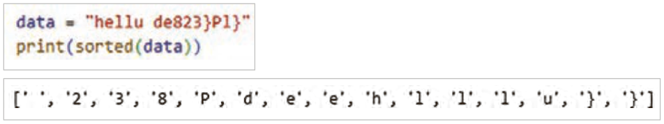
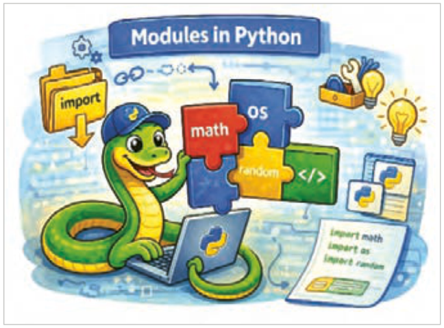
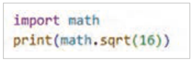

User-Defined Function (توابعی که برنامهنویس تعریف میکند): توابعی که تاکنون تعریف کردید در این دسته قرار دارند.
Built-in functions (یا توابع داخلی پایتون): توابعی که در پایتون از قبل تعریف شدهاند و برنامهنویس آنها را در برنامههای خود استفاده میکند. کارهای رایج و تکراری را سریع، ساده و بدون نوشتن کد طولانی انجام میدهد. به کمک توابع داخلی، برنامهها خواناتر، کوتاهتر و کمخطا میشوند.
در بخشهای پیش با برخی از این توابع آشنا شدید، در ادامه نیز کاربرد برخی دیگر را یاد خواهید گرفت. توابع ریاضی: این توابع فقط یا عمدتاً روی مقادیر عددی کار میکنند (جدول4).
جدول ۴
نام تابع
کاربرد
مثال
خروجی
abs()
محاسبه قدرمطلق عدد
print(abs(-12))
12
round()
گرد کردن عدد اعشاری
print(round(3.6)) print(round(3.1415, 2))
4 3.14
pow()
محاسبه توان
print(pow(2, 3))
8
int()
تبدیل به عدد صحیح
print(int(4.8))
4
float()
تبدیل به عدد اعشاری
print(float(5))
5.0
max()
بزرگترین عدد
print(max(3, 9, 5))
9
min()
کوچکترین عدد
print(min(3, 9, 5))
3
sum()
جمع چند عدد
print(sum([2, 4, 6]))
12
صفحه ۷۱
صفحه ۷۲
تا این بخش با توابعی مثل print, len, type, input, str آشنا شدهاید. در ادامه با برخی از توابع داخلی غیرریاضی پایتون آشنا خواهید شد.
تابع sorted: این تابع برای مرتبسازی رشته، مجموعه، توپل و دیکشنری مورد استفاده قرار میگیرد و نتیجه را در قالب یک لیست جدید برمیگرداند.
ساختار کلی تابع
sorted(iterable, reverse=false)
iterable: دادهای که میخواهید مرتب کنید (لیست، رشته، توپل، مجموعه، دیکشنری و …)
reverse: اگر true باشد، ترتیب نزولی میشود. پیشفرض (false صعودی)
صفحه ۷۳
مثال: در این مثال تابع sorted رشتهای از کاراکترهای ذخیرهشده در متغیر data را بهصورت صعودی بر اساس کد اسکی کاراکترها مرتب میکند.

شکل ۱۴۹
ماژول (module)
ماژول یک فایل است که میتواند شامل چندین تابع، متغیر و کلاس باشد و برای سازماندهی برنامههای بزرگ استفاده میشود. با استفاده از ماژول میتوانید کدهای آماده را دوباره استفاده کنید و برنامۀ خود را کوتاهتر و مرتبتر کنید.

شکل ۱۵۰
انواع ماژول در پایتون: ماژول استاندارد (standard)
ماژولهایی در پایتون وجود دارند که برنامهنویس فقط آنها را در برنامه خودش وارد میکند و نیازی به تعریف آنها نیست. مثل time، date، random، math و... . به دو روش میتوان از ماژولهای استاندارد استفاده کرد.
روش اول: وارد کردن کل ماژول (import module)
این روش امنترین راه است. چون از تداخل نامها جلوگیری میکند. در این روش باید نام ماژول را قبل از تابع بیاورید.

شکل ۱۵۱
مثال: Sqrt یک تابع آماده در ماژول math پایتون است، که برای محاسبه جذر اعداد استفاده میشود (شکل151).
Page 70
Kinds of functions in Python
User-Defined Function (functions that the programmer defines): the functions you have defined so far are in this category.
Built-in functions (or Python's internal functions): functions that are already defined in Python and that the programmer uses in their programs. They do common and repeated jobs quickly, simply and without writing long code. With the help of built-in functions, programs become more readable, shorter and less error-prone.
You have met some of these functions in earlier sections, and you will learn others below. Math functions: these functions work only or mainly on numbers (Table 4).
Table 4
Function name
Use
Example
Output
abs()
Absolute value of a number
print(abs(-12))
12
round()
Round a decimal number
print(round(3.6)) print(round(3.1415, 2))
4 3.14
pow()
Power
print(pow(2, 3))
8
int()
Convert to an integer
print(int(4.8))
4
float()
Convert to a decimal number
print(float(5))
5.0
max()
Largest number
print(max(3, 9, 5))
9
min()
Smallest number
print(min(3, 9, 5))
3
sum()
Sum of several numbers
print(sum([2, 4, 6]))
12
Page 71
Page 72
So far you have met functions such as print, len, type, input, and str. Next you will meet some of Python's built-in functions that are not about math.
The sorted function: used to sort strings, sets, tuples, and dictionaries; it returns the result as a new list.
General form of the function
sorted(iterable, reverse=false)
iterable: the data you want to sort (list, string, tuple, set, dictionary, …)
reverse: if true, the order is descending. Default: false (ascending)
Page 73
Example: in this example sorted sorts the string of characters stored in the data variable in ascending order, by the characters' ASCII codes.
Figure 149
Modules (module)
A module is a file that can contain several functions, variables, and classes, and it is used to organize large programs. With modules you can reuse ready-made code and keep your program shorter and tidier.
Figure 150
Types of modules in Python: the standard module
Python has modules that the programmer just brings into the program without defining them, such as time, date, random, math, and so on. Standard modules can be used in two ways.
The first way: importing the whole module (import module)
This is the safest way, because it prevents name clashes. In this method you must write the module name before the function.
Figure 151
Example: sqrt is a ready-made function in Python's math module, used to calculate the square root of numbers (Figure 151).